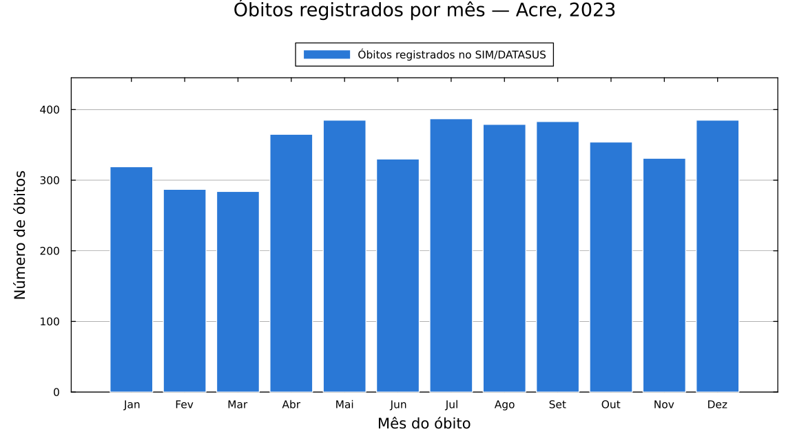
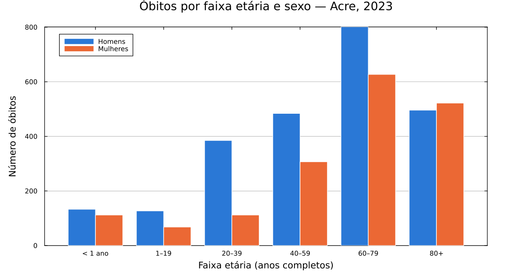
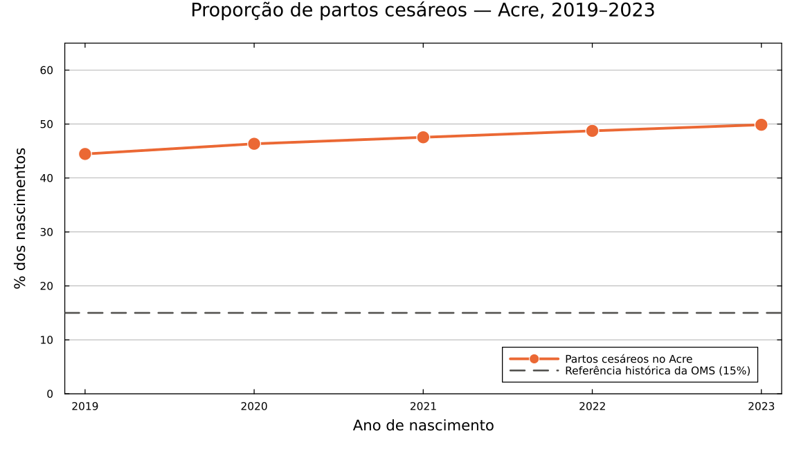

Exemplos práticos (para quem está começando)
Esta página é um passo a passo completo para quem nunca programou e quer usar os dados públicos de saúde do Brasil. Você não precisa saber nada de Julia, de estatística ou de informática em saúde para seguir os exemplos: é só copiar, colar e rodar.
Ao final você terá um gráfico como este, feito com dados reais do Ministério da Saúde:

O DATASUS é o departamento do Ministério da Saúde que publica, de graça, os registros de saúde do Brasil inteiro. São os chamados microdados: uma linha para cada óbito, cada nascimento, cada internação. O MicroSUS.jl serve para baixar e abrir esses arquivos sem que você precise entrar no site do DATASUS.
Os sistemas usados nesta página:
- SIM — Sistema de Informações sobre Mortalidade. Uma linha por óbito registrado no Brasil.
- SINASC — Sistema de Informações sobre Nascidos Vivos. Uma linha por bebê nascido vivo.
Antes de começar: instalando o Julia
Julia é a linguagem de programação que vamos usar. Baixe e instale a partir do site oficial: julialang.org/downloads.
Depois de instalar, abra o programa Julia. Vai aparecer uma janela preta (ou branca) com este símbolo esperando você digitar:
julia>Esse é o console do Julia — o lugar onde você digita comandos. É nele que tudo abaixo acontece.
Passo 1: Instalando e carregando
Um "pacote" é um conjunto de ferramentas prontas que outra pessoa já escreveu. Precisamos de quatro:
| Pacote | Para que serve |
|---|---|
MicroSUS | Baixa e abre os dados do DATASUS |
DataFrames | Organiza os dados em forma de tabela (como uma planilha) |
Plots | Desenha os gráficos |
StatsPlots | Acrescenta tipos de gráfico extras (usado no Exemplo 2) |
Copie e cole o bloco abaixo no console do Julia e aperte Enter:
using Pkg
Pkg.add(["MicroSUS", "DataFrames", "Plots", "StatsPlots"])Explicando linha por linha:
using Pkg— carrega o gerenciador de pacotes do Julia, a ferramenta que instala outros pacotes.Pkg.add([...])— manda instalar os quatro pacotes da lista. Os colchetes[ ]agrupam vários itens; as aspas" "indicam que são nomes de texto.
A instalação baixa e compila bastante coisa: pode levar de 5 a 15 minutos. Uma vez instalados, os pacotes ficam no seu computador para sempre e você nunca mais precisa repetir este comando.
Instalado, agora carregue os pacotes. Instalar é como comprar uma ferramenta; carregar é tirá-la da gaveta para usar. Isso precisa ser feito toda vez que você abrir o Julia:
using MicroSUS
using DataFrames
using Dates
using Plotsusing Dates— o Julia já vem com este pacote embutido (não precisa instalar). Ele entende datas e permite perguntar coisas como "de que mês é esta data?".
Passo 2: Baixando os dados do SUS
Agora vamos pedir os registros de óbito do estado do Acre no ano de 2023:
obitos = fetch_datasus(:SIM_DO; uf = "AC", anos = 2023)Explicando cada pedaço:
obitos =— cria uma "caixa" chamadaobitose guarda o resultado dentro dela. O nome é escolha sua: poderia serdados,tabelaetc.fetch_datasus(...)— a função que faz tudo de uma vez: acha o arquivo no servidor do Ministério da Saúde, baixa, descompacta, lê e organiza em tabela.:SIM_DO— qual sistema queremos.:SIM_DOsão as declarações de óbito. Os dois-pontos na frente fazem parte do nome, não esqueça.uf = "AC"— a sigla do estado. Troque por"SP","BA","PE"...anos = 2023— o ano desejado.
Escolhemos o Acre porque é um estado pequeno: o arquivo baixa rápido e o exemplo funciona bem em qualquer computador. Estados grandes como São Paulo funcionam igual, só demoram mais.
O MicroSUS guarda os arquivos baixados no seu computador. Se você rodar o mesmo comando amanhã, ele usa a cópia local e responde na hora, sem internet.
Espiando o que veio
Vale conferir o que você tem em mãos antes de fazer o gráfico:
nrow(obitos)nrowsignifica number of rows, número de linhas. Cada linha é um óbito. Para o Acre em 2023 o resultado é 4189.
first(obitos[:, [:DTOBITO, :SEXO, :IDADE_ANOS, :RACACOR, :CAUSABAS]], 5)obitos[:, [...]]— escolhe algumas colunas da tabela. Os dois-pontos sozinhos, antes da vírgula, significam "todas as linhas".first(..., 5)— mostra só as 5 primeiras linhas, para não encher a tela com milhares.
O resultado:
5×5 DataFrame
Row │ DTOBITO SEXO IDADE_ANOS RACACOR CAUSABAS
│ Date String? Int64? String? String15
─────┼─────────────────────────────────────────────────────
1 │ 2023-01-01 Masculino 81 Parda C349
2 │ 2023-01-01 Feminino 56 Parda J159
3 │ 2023-01-01 Feminino 54 Branca I219
4 │ 2023-01-01 Masculino 57 Parda C169
5 │ 2023-01-01 Feminino 64 Parda B342Repare que o MicroSUS já fez o trabalho chato por você: SEXO veio escrito como "Masculino"/"Feminino" (no arquivo original é "1"/"2"), DTOBITO virou uma data de verdade e IDADE_ANOS já está em anos completos (no arquivo original a idade é um código de três dígitos).
As colunas mais úteis do SIM:
| Coluna | O que é |
|---|---|
DTOBITO | Data do óbito |
SEXO | Masculino / Feminino |
IDADE_ANOS | Idade em anos completos |
RACACOR | Raça/cor declarada |
CAUSABAS | Causa básica do óbito, em código CID-10 |
CODMUNRES | Código IBGE do município de residência |
LOCOCOR | Onde ocorreu (hospital, domicílio, via pública...) |
Passo 3: Criando o gráfico
Queremos saber em que meses morreram mais pessoas. Isso tem duas partes: primeiro contar, depois desenhar.
3.1 Contando os óbitos de cada mês
obitos.mes = month.(obitos.DTOBITO)obitos.DTOBITO— pega a coluna das datas.month(...)— devolve o número do mês de uma data (janeiro = 1).- O ponto em
month.(...)é a parte importante: ele manda aplicar a função em cada data da coluna, uma por uma. Sem o ponto, o Julia tentaria pegar o mês da coluna inteira e daria erro. obitos.mes =— guarda o resultado como uma coluna nova, chamadames, na mesma tabela.
por_mes = combine(groupby(obitos, :mes), nrow => :obitos)
sort!(por_mes, :mes)groupby(obitos, :mes)— separa a tabela em 12 montinhos, um por mês.combine(..., nrow => :obitos)— para cada montinho, conta as linhas e chama esse número deobitos. O resultado é uma tabela pequena, de 12 linhas.sort!(por_mes, :mes)— ordena de janeiro a dezembro. A exclamação!é uma convenção do Julia: avisa que a função modifica a tabela em vez de devolver uma cópia.
Confira o resultado digitando por_mes:
12×2 DataFrame
Row │ mes obitos
─────┼───────────────
1 │ 1 319
2 │ 2 287
3 │ 3 284
⋮ │ ⋮ ⋮
12 │ 12 3853.2 Desenhando
Primeiro, uma lista com os nomes dos meses — números no eixo de um gráfico são feios e pouco claros:
meses = ["Jan", "Fev", "Mar", "Abr", "Mai", "Jun",
"Jul", "Ago", "Set", "Out", "Nov", "Dez"]Agora um ajuste de estilo que vale para todos os gráficos da sessão:
default(fontfamily = "sans-serif", framestyle = :box, grid = :y,
gridalpha = 0.25, size = (900, 500), margin = 6Plots.mm)default(...)— define a aparência padrão, para não repetir isso em cada gráfico.grid = :ycomgridalpha = 0.25— desenha apenas as linhas de grade horizontais, bem clarinhas: ajudam a ler os valores sem competir com os dados.size = (900, 500)— largura e altura em pixels.margin = 6Plots.mm— uma folga nas bordas, para o título e os rótulos não ficarem cortados.
E finalmente o gráfico:
bar(meses[por_mes.mes], por_mes.obitos,
title = "Óbitos registrados por mês — Acre, 2023",
xlabel = "Mês do óbito",
ylabel = "Número de óbitos",
label = "Óbitos registrados no SIM/DATASUS",
color = "#2a78d6",
linecolor = :white,
linewidth = 1,
legend = :outertop,
ylims = (0, maximum(por_mes.obitos) * 1.15))Linha por linha:
bar(x, y)— desenha barras. O primeiro valor é o que vai no eixo horizontal; o segundo, a altura das barras.meses[por_mes.mes]— troca os números (1, 2, 3...) pelos nomes ("Jan", "Fev", "Mar"...). Os colchetes servem para buscar itens de uma lista pela posição.title— o título. Diga o quê, onde e quando: quem olha o gráfico sozinho, sem o texto ao redor, precisa entender.xlabel/ylabel— o nome de cada eixo, sempre com a unidade.label— o texto da legenda; aqui também aproveitamos para dizer de onde vêm os dados.color = "#2a78d6"— a cor das barras, em código hexadecimal (o mesmo padrão usado em sites). Este é um azul de bom contraste, legível também por quem tem daltonismo.linecolor = :white— uma bordinha branca separando as barras.legend = :outertop— põe a legenda fora da área do gráfico, em cima. Assim ela nunca cobre uma barra.ylims = (0, ...)— o eixo vertical começa no zero. Isso é importante: um gráfico de barras que não começa no zero exagera as diferenças. O* 1.15deixa 15% de respiro acima da barra mais alta.
Para salvar a figura em arquivo:
savefig("obitos_por_mes.png")O arquivo vai para a pasta onde o Julia está rodando. Se não souber qual é, digite pwd() para descobrir.
Pronto — este é o gráfico do começo da página.
O gráfico mostra quantos óbitos foram registrados, não o risco de morrer. Estados com mais habitantes têm mais óbitos simplesmente por serem maiores. Para comparar lugares diferentes é preciso dividir pela população (calcular uma taxa).
Como adaptar ao seu caso
Mudando uma palavra do comando do Passo 2 você muda tudo:
# outro estado
obitos = fetch_datasus(:SIM_DO; uf = "PE", anos = 2023)
# vários anos de uma vez
obitos = fetch_datasus(:SIM_DO; uf = "AC", anos = 2019:2023)
# dois estados
obitos = fetch_datasus(:SIM_DO; uf = ["PE", "BA"], anos = 2023)
# nascimentos em vez de óbitos
nasc = fetch_datasus(:SINASC; uf = "AC", anos = 2023)
# internações hospitalares (mensal: precisa dizer os meses)
inter = fetch_datasus(:SIH_RD; uf = "AC", anos = 2023, meses = 1:12)
# dengue no Brasil inteiro (arquivo nacional: uf é ignorada)
dengue = fetch_datasus(:SINAN_DENGUE; anos = 2023)Quando você pede vários anos ou estados, o MicroSUS empilha tudo numa tabela só e acrescenta as colunas UF_ARQUIVO, ANO_ARQUIVO e (nas fontes mensais) MES_ARQUIVO, dizendo de qual arquivo cada linha veio.
Para ver a lista completa do que dá para baixar:
fontes() |> DataFrame| Identificador | Sistema | Periodicidade |
|---|---|---|
:SIM_DO | Óbitos (SIM) | anual, por estado |
:SINASC | Nascidos vivos | anual, por estado |
:SIH_RD | Internações hospitalares | mensal, por estado |
:SIA_PA | Produção ambulatorial | mensal, por estado |
:CNES_ST | Estabelecimentos de saúde | mensal, por estado |
:CNES_PF | Profissionais de saúde | mensal, por estado |
:SINAN_DENGUE | Dengue | anual, nacional |
:SINAN_CHIKUNGUNYA | Chikungunya | anual, nacional |
:SINAN_ZIKA | Zika | anual, nacional |
:SINAN_MALARIA | Malária | anual, nacional |
:SINAN_TUBERCULOSE | Tuberculose | anual, nacional |
:SINAN_VIOLENCIA | Violência interpessoal/autoprovocada | anual, nacional |
Exemplo 2: Óbitos por faixa etária e sexo
Um gráfico com duas séries lado a lado, para comparar homens e mulheres em cada idade. Continuamos com a tabela obitos do Passo 2.
Este exemplo usa o StatsPlots, então carregue-o também:
using StatsPlotsPrimeiro, uma função que transforma a idade exata em faixa etária:
function faixa_etaria(idade)
ismissing(idade) && return missing
idade < 1 && return "< 1 ano"
idade < 20 && return "1–19"
idade < 40 && return "20–39"
idade < 60 && return "40–59"
idade < 80 && return "60–79"
return "80+"
endfunction ... end— cria uma função, uma receita reaproveitável.ismissing(idade) && return missing— nos microdados nem todo campo está preenchido; o Julia chama esses buracos demissing. A linha diz: "se a idade estiver faltando, devolvamissinge pare por aqui".- As linhas seguintes são testadas em ordem, de cima para baixo. Quando chega em
idade < 40, já sabemos que a idade é 20 ou mais, porque as faixas anteriores não se aplicaram.
Aplicando a função e contando:
obitos.faixa = faixa_etaria.(obitos.IDADE_ANOS)
dados = dropmissing(obitos, [:faixa, :SEXO])- De novo o ponto em
faixa_etaria.(...): aplica a receita a cada idade da coluna. dropmissing(...)— descarta as linhas em que a faixa ou o sexo não foram informados. Sem isso o gráfico teria uma categoria vazia.
ordem = ["< 1 ano", "1–19", "20–39", "40–59", "60–79", "80+"]
homens = [count(r -> r.faixa == f && r.SEXO == "Masculino", eachrow(dados)) for f in ordem]
mulheres = [count(r -> r.faixa == f && r.SEXO == "Feminino", eachrow(dados)) for f in ordem]ordemfixa a sequência das faixas no eixo. Sem isso o Julia ordenaria em ordem alfabética e "80+" apareceria antes de "< 1 ano".[... for f in ordem]— repete a mesma conta para cada faixa e junta os resultados numa lista. Lê-se: "para cadafemordem, faça...".count(r -> ..., eachrow(dados))— percorre as linhas (eachrow) e conta quantas satisfazem a condição. Or -> ...é uma pergunta feita a cada linhar;&&significa "e" (as duas condições ao mesmo tempo).
O gráfico:
groupedbar(ordem, hcat(homens, mulheres),
label = ["Homens" "Mulheres"],
color = ["#2a78d6" "#eb6834"],
title = "Óbitos por faixa etária e sexo — Acre, 2023",
xlabel = "Faixa etária (anos completos)",
ylabel = "Número de óbitos",
linecolor = :white,
linewidth = 1,
legend = :topleft)groupedbar— barras agrupadas: para cada faixa etária, duas barras vizinhas.hcat(homens, mulheres)— junta as duas listas em duas colunas, que viram as duas barras de cada grupo.- Em
labelecolor, os itens são separados por espaço, não por vírgula. Não é descuido: espaço cria uma linha com duas colunas, que é o formato que oPlotsespera para identificar duas séries. - Azul e laranja formam um par de alto contraste que continua legível para as formas mais comuns de daltonismo — melhor que o clássico vermelho/verde.

O gráfico mostra dois padrões conhecidos da saúde pública brasileira: a mortalidade masculina é bem maior entre 20 e 59 anos, e a diferença se inverte depois dos 80, quando restam mais mulheres vivas.
Exemplo 3: Uma tendência ao longo do tempo
Agora com dados de nascimentos, acompanhando a proporção de partos cesáreos ao longo de cinco anos.
nasc = fetch_datasus(:SINASC; uf = "AC", anos = 2019:2023)anos = 2019:2023— os dois-pontos criam um intervalo: 2019, 2020, 2021, 2022 e 2023. São cinco arquivos, baixados em paralelo e empilhados numa tabela só.
partos = dropmissing(nasc, :PARTO)
resumo = combine(groupby(partos, :ANO_ARQUIVO),
nrow => :total,
:PARTO => (p -> count(==("Cesáreo"), p)) => :cesareos)
resumo.pct = 100 .* resumo.cesareos ./ resumo.total
sort!(resumo, :ANO_ARQUIVO)groupby(partos, :ANO_ARQUIVO)— separa por ano.ANO_ARQUIVOé a coluna que ofetch_datasusacrescentou dizendo de qual ano veio cada linha.nrow => :total— conta todos os nascimentos do ano.:PARTO => (p -> count(==("Cesáreo"), p)) => :cesareos— dentro de cada ano, olha a colunaPARTOe conta quantas vezes aparece "Cesáreo".100 .* resumo.cesareos ./ resumo.total— a conta da porcentagem. Os pontos em.*e./de novo significam "faça isso linha por linha".
O resultado:
5×4 DataFrame
Row │ ANO_ARQUIVO total cesareos pct
─────┼───────────────────────────────────────
1 │ 2019 16268 7232 44.4554
2 │ 2020 15129 7011 46.3415
3 │ 2021 15683 7457 47.5483
4 │ 2022 14474 7055 48.7426
5 │ 2023 14464 7213 49.8686Para tendências no tempo, linha em vez de barra:
plot(resumo.ANO_ARQUIVO, resumo.pct,
label = "Partos cesáreos no Acre",
color = "#eb6834",
lw = 3,
marker = :circle,
ms = 8,
markerstrokecolor = :white)
hline!([15], label = "Referência histórica da OMS (15%)",
color = "#52514e", ls = :dash, lw = 2)
plot!(title = "Proporção de partos cesáreos — Acre, 2019–2023",
xlabel = "Ano de nascimento",
ylabel = "% dos nascimentos",
ylims = (0, 65),
xticks = 2019:2023,
legend = :bottomright)plot(x, y)— liga os pontos por uma linha. Use linha quando o eixo horizontal for tempo; barras quando forem categorias soltas.lw = 3(line width) ems = 8(marker size) — linha grossa e bolinhas grandes. Com poucos pontos, isso deixa o gráfico mais firme.hline!([15], ...)— desenha uma linha horizontal na altura 15, para servir de comparação.- A exclamação em
hline!eplot!quer dizer "acrescente ao gráfico que já existe", em vez de começar um novo. É a mesma convenção dosort!. ls = :dash— tracejada. Uma referência não deve competir visualmente com o dado.xticks = 2019:2023— força um rótulo por ano. Sem isso o Julia poderia escrever "2019.5", que não existe.

Os 15% vêm de uma recomendação da OMS de 1985. Desde 2015 a Organização não defende mais uma meta numérica fixa, e sim que cada cesárea seja feita quando houver indicação médica. A linha está no gráfico como ponto de comparação histórico, não como meta oficial atual.
Problemas comuns
UndefVarError: fetch_datasus not defined Você esqueceu de carregar o pacote. Rode using MicroSUS.
UndefVarError: groupedbar not defined O groupedbar vem do StatsPlots, não do Plots. Rode using StatsPlots.
Warning: arquivos não encontrados no FTP O ano pedido ainda não foi publicado para esse estado, ou o servidor do DATASUS está fora do ar. Os dados definitivos costumam sair com cerca de um ano de atraso. Tente um ano anterior.
O download está muito lento O servidor do DATASUS oscila bastante. Comece por um estado pequeno ("AC", "RR", "AP") e um ano só. Lembre que o arquivo fica salvo: a segunda vez é instantânea.
O gráfico não aparece Dependendo de como você roda o Julia, a janela do gráfico pode não abrir sozinha. Salve em arquivo com savefig("grafico.png") e abra a imagem normalmente.
Aparece missing no meio dos dados É esperado, e não é erro: significa que aquele campo não foi preenchido na declaração original. Use dropmissing(tabela, :COLUNA) para descartar essas linhas antes de contar.
Para onde ir agora
- Leitura:
ler, filtro, partições — como ler arquivos muito grandes sem estourar a memória do computador, e como filtrar as linhas já na leitura. - Dimensões: IBGE e CID-10 — como descobrir a qual doença corresponde um código como
C349, e como cruzar o código do município com as tabelas do IBGE. - Download e FTP — controle fino sobre quais arquivos baixar.
- Referência da API — a lista completa de funções.